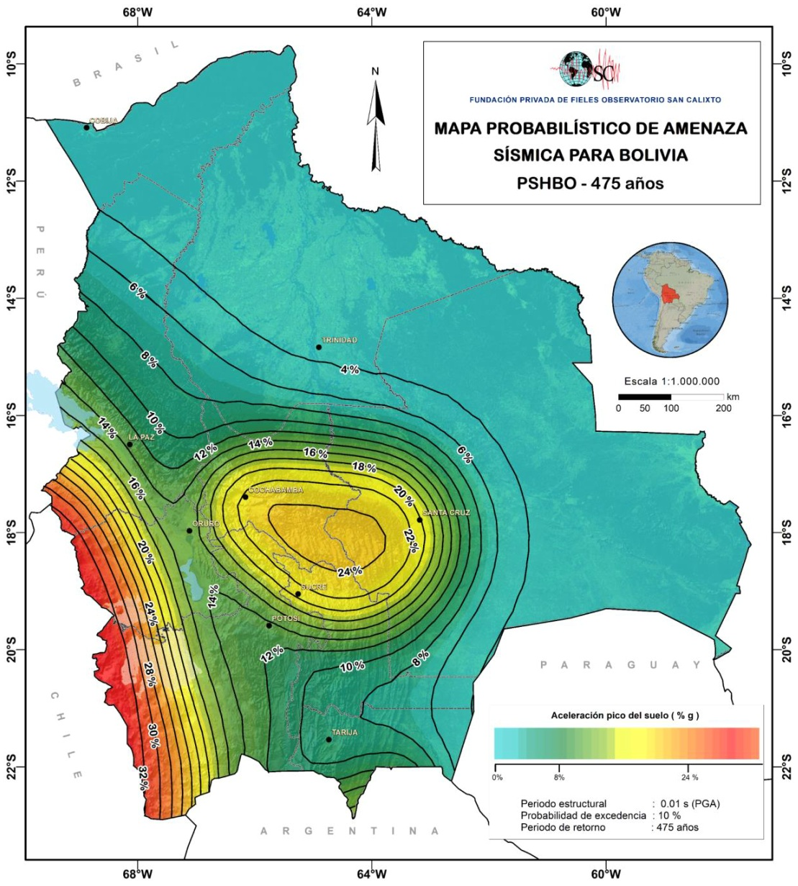

Espectro Sísmico
NBDS 2023
// mariocsi
CNBDS · Bolivia
Amenaza sísmica
Aceleración máxima del suelo
S₀
[g]
Tipo de suelo
(Tabla 1 & 2)
Clasificación de suelo
S0 – Roca dura · Vs30 > 1500 m/s
S1 – Roca · Vs30: 760–1500 m/s
S2 – Suelo muy rígido · Vs30: 370–760 m/s
S3 – Suelo rígido · Vs30: 180–370 m/s
S4 – Suelo blando · Vs30 < 180 m/s
Factor de importancia
Ie
(Tabla 5)
Tipo de estructura
Tipo IV · Ie = 1.5 — Hospitales, aeropuertos, esenciales
Tipo III · Ie = 1.3 — Escuelas, estadios, mercados
Tipo II · Ie = 1.0 — Viviendas, oficinas, hoteles
Tipo I · Ie = 1.0* — Provisorias / aisladas
Sistema estructural
(Tabla 8)
Sistema resistente (R · Cd · Δ)
Pórticos Esp. RM · R=8 · Cd=5.5 · Δ=0.012
Pórticos Int. RM · R=5 · Cd=4.5 · Δ=0.011
Pórticos Ord. RM · R=3 · Cd=2.5 · Δ=0.010
Entrepiso s/viga + col. · R=2.5 · Cd=1.8 · Δ=0.007
Entrepiso s/viga + muros ord. · R=4 · Cd=3.6 · Δ=0.008
Entrepiso c/vigas pl. Dual esp. · R=5.5 · Cd=4.5 · Δ=0.009
Muros Esp. · R=6 · Cd=5 · Δ=0.009
Muros Ord. · R=5 · Cd=4.5 · Δ=0.008
Muros ductilidad limitada · R=4 · Cd=3.6 · Δ=0.006
Dual: Pórtico Esp + Muro Esp · R=7 · Cd=5.5 · Δ=0.010
Dual: Pórtico Esp + Muro Esp Acop. · R=8 · Cd=8 · Δ=0.010
Dual: Pórtico Esp + Muro Ord · R=6 · Cd=5 · Δ=0.009
Dual: Pórtico Int + Muro Esp · R=6.5 · Cd=5 · Δ=0.009
Dual: Pórtico Int + Muro Ord · R=5.5 · Cd=4.5 · Δ=0.008
Dual: Pórtico Ord + Muro Ord · R=4.5 · Cd=4 · Δ=0.007
Acero – Pórticos Esp. RM · R=8 · Cd=5.5 · Δ=0.010
Acero – Pórticos Int. RM · R=4.5 · Cd=4 · Δ=0.009
Acero – Pórticos Ord. RM · R=3.5 · Cd=3 · Δ=0.008
Acero – Pórticos Esp. Concén. Arr. · R=6 · Cd=5 · Δ=0.009
Acero – Pórticos Ord. Concén. Arr. · R=3.25 · Cd=3.25 · Δ=0.008
Acero – Pórticos Excén. Arr. · R=8 · Cd=4 · Δ=0.010
Acero – Perfiles laminados frío · R=3 · Cd=2.5 · Δ=0.007
Albañilería armada/confinada · R=3 · Cd=2.5 · Δ=0.004
Madera – esf. admisibles · R=5 · Cd=4.5 · Δ=0.007
Factor topográfico
τ
(Art. 7)
τ = 1.00 -- Plano
τ = Calc. -- 0.40–0.90
τ = 1.40 -- Cresta
Diferencia de pendientes (I − i)
▼
Irregularidades
FIT
(Art. 16 · Tablas 9 y 10)
FIT = 1 − ΣIa − ΣIp ≥ 0.50. Marque las irregularidades presentes:
FIT = 1.000
▶ CALCULAR ESPECTRO
⬇ DESCARGAR ESPECTRO EN CSV
📊
Resultados
Presione "Calcular espectro"
Mapa probabilístico de amenaza sísmica – Bolivia · OSC · PSHBO 475 años

+
−
⟲
100%
Espectro de respuesta